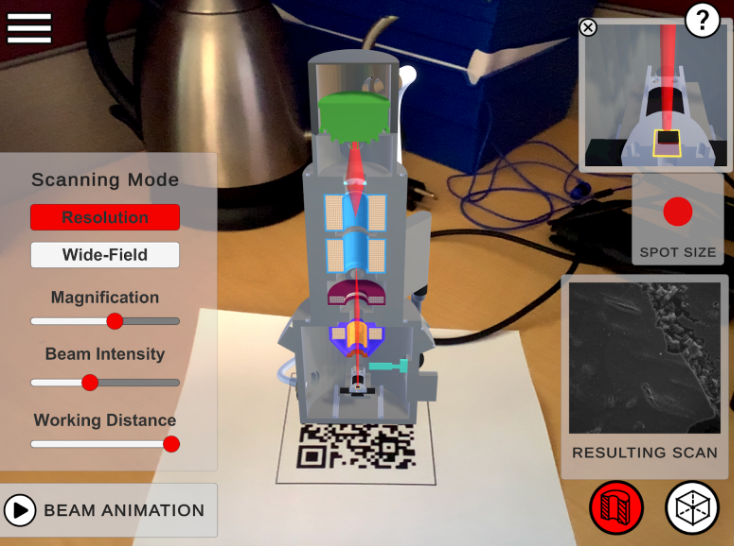

Research · AR SEM Exploration
Opening Up the Black Box: an AR Look into the Scanning Electron Microscope

Screenshot from the application
Nanotechnology, the engineering of matter on a molecular or atomic scale, has brought about scientific improvement in many fields such as medicine, environmental science, and computing. With its great potential being recognized, nanotechnology is gaining popularity and the demand for education in the field is also increasing.
When studying nanotechnology, a Scanning Electron Microscope (SEM) is often used. It is deemed as a suitable equipment for examining nanoscale microstructures, and meanwhile very helpful in introducing students to the field of nanotechnology by allowing them to view and better comprehend material properties in nanotechnology. This is because compared to an optical microscope, SEM uses electrons instead of light to produce the outcome image. With the shorter wavelength of electrons, a SEM is capable of producing images with higher magnification range and resolution. However, although the user can determine the inputs and view the output of a SEM, the internal mechanisms are not visible to them. This may create a gap between one's theoretical knowledge and practical lab application skills, causing students to not fully understand how to operate a SEM.
For this research, I worked as part of the MIT Learning Engineering and Practice Group to further develop SEM Exploration, an app aimed at more effectively teaching its users about electron scattering in the SEM using Augmented Reality. Within this app, users can learn what role each component of the microscope plays in forming the image produced; They can also adjust related values such as beam intensity and stage manipulation to visualize how they affect the outcome, all in a realistic context created by Augmented Reality. These features help provide insights into SEM, which would otherwise be a black box. This application is employed in the lab of MIT course 2.674 Micro/Nano Engineering Laboratory to assist students in learning about the SEM.
This research provided me with the opportunity to join an ongoing project and develop an app beyond its prototype. Furthermore, as the SEM app is developed for educational purposes, I was able to explore how HCI technology is employed scientifically, in aspects beyond gaming. I maintained good communication and produced very satisfactory results, and consequently accumulated practical knowledge in the process.
Assets for the application from the SEM
My role largely consist of using unity and programming in C# to develop the new version of the app. I maintained and revised the performance of existing features and mechanics with comprehensible code and build structures, and optimized app runtime efficiency while minimizing risk of device crashing during use. On top of debugging and improving current functions, I implemented various functions improving user experience including: a close up window that auto pops out to help user focus on the outcome of their manipulation of the SEM, text and photo embedded label texts that auto adjusts to screen size, and a new logic for blurring that more closely mirrors that of the actual SEM.
Aside from programming, I also went into the lab and learned how to operate the SEM and used it to create assets for the application. (see picture)
Around the time I joined, the group was collectively working towards a conference submission. I got a chance to become familiarized with the process of co-writing submissions, and am currently working towards a submission for a different application — machining in the dorm room.